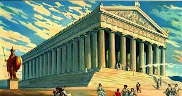
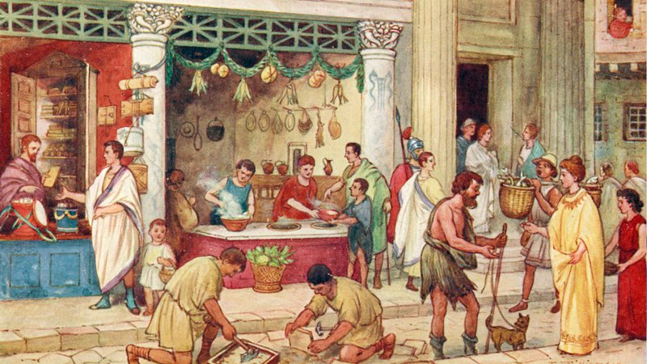

A Antiguidade Clássica é um período muito importante da história da humanidade, que se estendeu
aproximadamente do século VIII a.C. ao século V d.C. Durante esse período, surgiram grandes civilizações, como a Grécia e Roma, que influenciaram significativamente a cultura e a política da Europa e do mundo
ocidental.
A seguir, apresento uma breve pesquisa sobre a Antiguidade Clássica, com foco nas civilizações grega eromana:
Grécia Antiga:
A Grécia Antiga foi formada por diversas cidades-estado independentes, como Atenas, Esparta e Tebas.
A democracia ateniense foi uma das primeiras formas de governo democrático da história.
A filosofia grega teve grande importância, com filósofos como Sócrates, Platão e Aristóteles.

Templo Partenon, dedicado à deusa Atenas, protetora da cidade de mesmo nome (CC0 Public Domain)
A cultura grega influenciou a arte, a literatura e a arquitetura de todo o mundo ocidental, com exemplos
como a escultura do Discóbolo, a peça teatral "Édipo Rei" e o Partenon.
Roma Antiga :
Roma foi uma das maiores potências da Antiguidade, dominando grande parte da Europa, África e Ásia.
O sistema político romano foi baseado em uma república, que evoluiu para o império sob o comando de líderes
como Júlio César e Augusto.
A religião romana era politeísta e influenciou muitas outras religiões europeias.
A arquitetura romana teve grande importância, com exemplos como o Coliseu, o Arco de Constantino e a Basílica de São Pedro.
Ambas as civilizações tiveram grande influência na cultura e na política do mundo ocidental, e muitos de
seus legados podem ser vistos ainda hoje em dia. A Antiguidade Clássica também foi um período de grandes
avanços nas áreas da filosofia, da ciência, da literatura e da arte, que continuam a influenciar a sociedade
moderna.

Ilustração de ruas romanas com vendedores
*Fonte* : Adaptado de
(chatgpt)
Legados deixados pela Grécia e Roma antiga para a sociedade ocidental
A Grécia e Roma antiga deixaram muitos legados para a sociedade ocidental, que incluem:
Democracia:
A Grécia antiga é considerada o berço da democracia, e seu sistema político influenciou o
desenvolvimento da democracia em todo o mundo.
Filosofia:
A filosofia grega, incluindo pensadores como Sócrates, Platão e Aristóteles, teve uma grande
influência no pensamento ocidental e continua a ser estudada até hoje.
Literatura:
A literatura grega e romana, incluindo obras como a Ilíada, a Odisseia, as tragédias de Ésquilo,
Sófocles e Eurípides, e as obras de Virgílio, Horácio e Ovídio, continua a ser lida e estudada em todo o
mundo.
Arquitetura:
A arquitetura grega e romana, incluindo o Partenon e o Coliseu, influenciou o desenvolvimento
da arquitetura ocidental e continua a ser uma fonte de inspiração para arquitetos.
Direito:
O sistema jurídico romano, incluindo a lei civil e a lei dos povos, teve uma grande influência no
desenvolvimento do direito ocidental.
Matemática:
A matemática grega, incluindo o trabalho de Pitágoras e Euclides, teve uma grande influência no
desenvolvimento da matemática ocidental.
Medicina:
A medicina grega, incluindo o trabalho de Hipócrates, teve uma grande influência no
desenvolvimento da medicina ocidental.
Esses são apenas alguns dos legados deixados pela Grécia e Roma antiga para a sociedade ocidental. Sua
influência pode ser vista em muitos aspectos da vida moderna, incluindo política, filosofia, arte,
literatura, arquitetura, direito, matemática e medicina.
Fonte: chatgpt
Relações entre a democracia ateniense com a democracia atual
democracia ateniense é considerada uma das primeiras formas de democracia na história, tendo sido
estabelecida na cidade-estado grega de Atenas no século V a.C. Em contraste, a democracia atual é
caracterizada por eleições regulares, uma constituição escrita, a separação de poderes, a liberdade de
imprensa e expressão, e outros princípios fundamentais.
Apesar das diferenças significativas, há algumas semelhanças entre a democracia ateniense e a democracia
atual. Em primeiro lugar, ambas as formas de democracia têm como objetivo principal dar ao povo o poder de
tomar decisões políticas. Na democracia ateniense, todos os cidadãos do sexo masculino maiores de 18 anos
tinham o direito de votar nas assembleias públicas. Na democracia atual, o direito de voto é geralmente
estendido a todos os cidadãos adultos.
Além disso, tanto a democracia ateniense quanto a democracia atual têm uma preocupação com a justiça e a
igualdade. Na democracia ateniense, por exemplo, havia uma lei que proibia a escravidão de cidadãos
atenienses, e havia tentativas de garantir a igualdade perante a lei. Na democracia atual, a luta por
direitos civis e igualdade tem sido uma questão importante.
No entanto, também existem diferenças significativas. Uma das principais diferenças é que a democracia
ateniense era uma democracia direta, em que os cidadãos se reuniam pessoalmente para tomar decisões
políticas. Na democracia atual, a maioria dos países adota uma forma de democracia representativa, em que os
cidadãos elegem representantes para tomar decisões em seu nome.
Além disso, a democracia ateniense era limitada a uma pequena parte da população, composta apenas por homens
livres e nascidos em Atenas. Na democracia atual, o direito de voto é geralmente estendido a todos os
cidadãos adultos, independentemente de sua origem social ou local de nascimento.
Em resumo, enquanto há algumas semelhanças entre a democracia ateniense e a democracia atual, as diferenças
são significativas. A democracia ateniense era uma forma de democracia direta, limitada a uma parte da
população, enquanto a democracia atual é caracterizada por eleições regulares, uma constituição escrita, a
separação de poderes e outros princípios fundamentais, e tem como objetivo estender o direito de voto a
todos os cidadãos adultos.
Fonte :chatgpt(: Adaptado de "Democracy: A Life" por Paul Cartledge).
-Influência romana na língua, nas leis e na religião
A influência romana na língua, nas leis e na região é significativa e ainda é sentida na sociedade ocidental
hoje em dia. A seguir, apresento algumas das principais influências romanas nessas áreas:
Língua:
A língua latina, falada pelos romanos antigos, teve uma grande influência na língua portuguesa e em
outras línguas europeias. Muitas palavras em português, como "amor", "liberdade" e "justiça", têm origem
latina. Além disso, a língua latina foi a base para o desenvolvimento de outras línguas, como o espanhol, o
francês e o italiano.
Leis:
O direito romano, desenvolvido pelos romanos antigos, influenciou o desenvolvimento do direito moderno
em todo o mundo ocidental. O direito romano enfatizava a importância da lei escrita, da justiça e da
igualdade perante a lei. Esses valores foram incorporados nas leis modernas, incluindo as constituições de
muitos países ocidentais.
Região:
O Império Romano exerceu uma grande influência na região do Mediterrâneo e além. Os romanos
construíram uma vasta rede de estradas, aquedutos e outras infraestruturas que ajudaram a unificar o império
e facilitar o comércio e a comunicação. Além disso, os romanos disseminaram a sua cultura e religião, que
ainda são influentes em muitos países hoje em dia.
Arquitetura:
A arquitetura romana influenciou o desenvolvimento da arquitetura ocidental. Os romanos foram
responsáveis pela construção de muitos edifícios monumentais, como o Coliseu, o Panteão e o Arco de
Constantino, que ainda são admirados por sua beleza e engenharia.
Arte:
A arte romana, incluindo a escultura, a pintura e a mosaicultura, teve uma grande influência na arte
ocidental. A arte romana era realista e muitas vezes retratava cenas históricas e mitológicas. Essa tradição
artística influenciou muitos artistas renascentistas e barrocos, que também valorizavam a representação
realista.
Em resumo, a influência romana na língua, nas leis, na região, na arquitetura e na arte é duradoura e
continua a ser sentida em muitas áreas da sociedade ocidental.
fonte:chatgpt